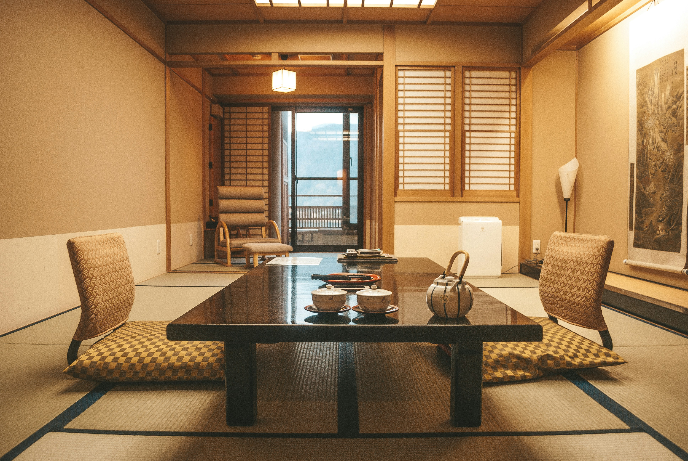
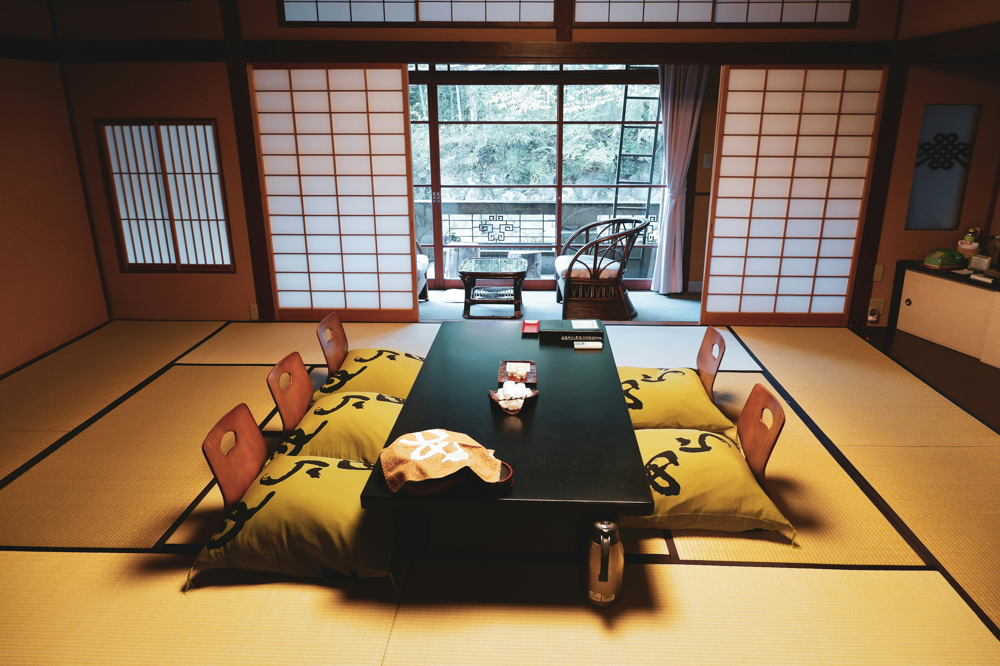
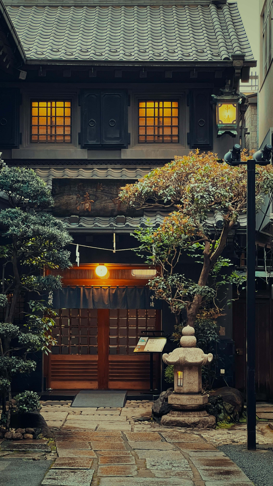
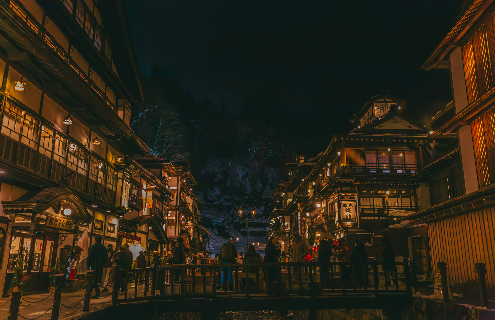

ROOMS
客室

ROOM 01
花筏 はないかだ
渓流を望む角部屋。専用の露天風呂付き。12.5畳+次の間。

ROOM 02
月草 つきくさ
竹林を臨む静かな一室。朝の光が美しい。10畳+広縁。

ROOM 03
苔清水 こけしみず
庭の苔庭を望む、一人旅にも好まれる部屋。8畳+板の間。
OKUYUGAWARA ONSEN
全五室の小さな宿。四季折々の山の景色と、源泉掛け流しの湯をお愉しみください。

ABOUT
奥湯河原の渓流沿い、四季の移ろいを間近に感じる場所に「かさね」はございます。昭和初期に建てられた数寄屋造りの母屋を丁寧に修繕し、現代の快適さを加えました。
お客様に本当の静けさをお届けしたいという想いから、客室は五室のみ。一組一組のお客様と、ゆっくり向き合う時間を大切にしております。
ROOMS

ROOM 01
渓流を望む角部屋。専用の露天風呂付き。12.5畳+次の間。

ROOM 02
竹林を臨む静かな一室。朝の光が美しい。10畳+広縁。
ROOM 03
庭の苔庭を望む、一人旅にも好まれる部屋。8畳+板の間。
CUISINE
料理長が毎朝、地元の漁港と農家を巡り、その日もっとも良い素材を選びます。箱根西麓の野菜、相模湾の魚介、足柄の猪や鹿。土地と季節が決める献立です。
器は地元の作家ものを中心に、料理が映える一枚を選んでお出しします。
SEASONAL KAISEKI
季節の懐石
源泉掛け流しの贅沢
ONSEN
敷地内に湧く自家源泉は、弱アルカリ性の単純温泉。肌にやわらかく、身体の芯からゆっくりと温まります。
大浴場の露天風呂では、渓流のせせらぎを聴きながら、四季の空を仰ぐ贅沢を。貸切風呂は檜と石の二種をご用意しております。
42℃
源泉温度
pH 8.5
泉質
3
浴場数



ACCESS
〒259-0314
神奈川県足柄下郡湯河原町
宮上750-1
JR東海道線 湯河原駅より
バス15分「奥湯河原」下車
送迎あり（要予約）
チェックイン 15:00
チェックアウト 11:00
お電話またはWebにて